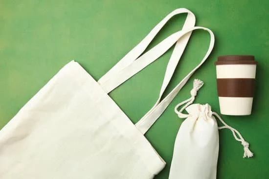

Desde 2022, el 70% de nuestros empaques son elaborados con materiales reciclados o biodegradables. Nuestro compromiso es lograr un 100% de envases sostenibles para 2026, reduciendo al máximo los plásticos de un solo uso y reemplazándolos por alternativas más responsables con el medioambiente.
Sabemos que cada pequeño cambio suma, por eso trabajamos de manera constante para innovar en nuestros procesos de embalaje: desde bolsas compostables hasta cajas de cartón reciclado que pueden reutilizarse o reciclarse fácilmente. Este esfuerzo no solo disminuye los residuos que terminan en vertederos, sino que también contribuye a una economía circular más consciente.
Además, al elegir materiales amigables con la naturaleza, buscamos que tu experiencia como cliente también sea más coherente con un estilo de vida sostenible. Queremos que cada compra no solo represente frescura y calidad en los productos, sino también la certeza de estar cuidando el planeta junto a nosotros.
Nuestro desafío hacia el 2026 es seguir avanzando en soluciones innovadoras, colaborando con proveedores responsables y escuchando a nuestra comunidad.